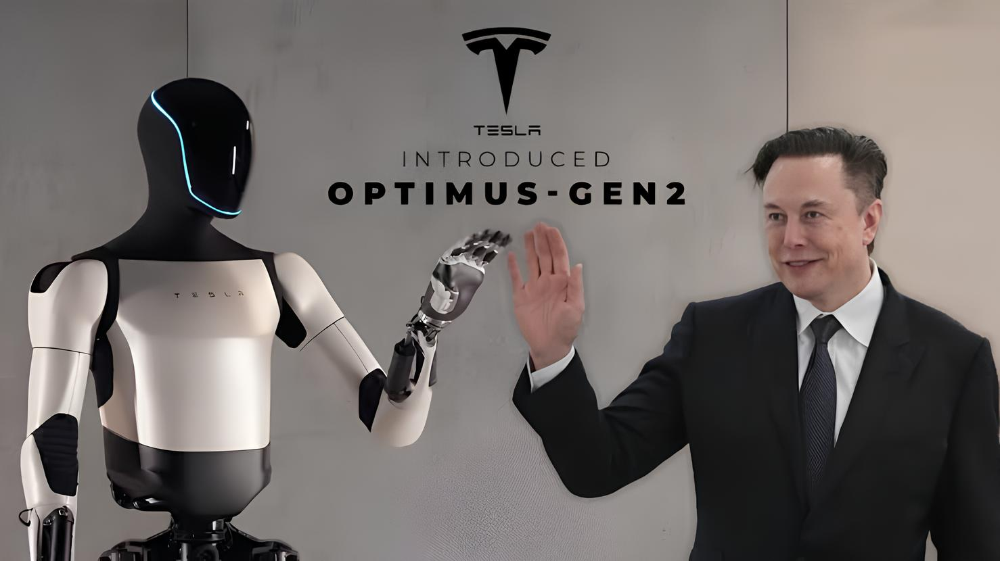
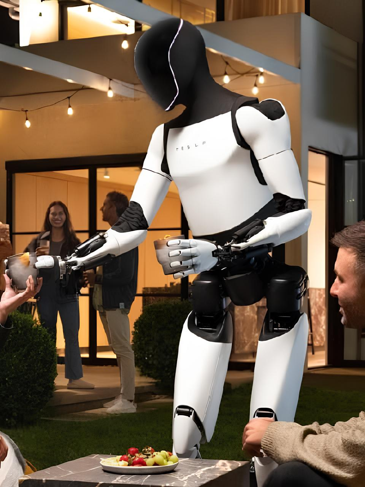

Galera, vocês já ouviram falar do Optimus, o robô da Tesla? No último evento do Musk, essa invenção incrível teve a maior interação com a galera e deixou todo mundo de queixo caído!

O Optimus promete ser o assistente perfeito para o seu dia a dia, ajudando em várias tarefas, desde arrumar a casa até dar aquela força no trabalho. Imagina ter um robô em casa que não só entende suas piadas, mas também prepara um café quentinho para você? Só falta ele lembrar de tirar o lixo, né?

Mas o que torna o Optimus tão especial? Ele é montado com uma combinação de tecnologias de ponta, incluindo inteligência artificial avançada, sensores de movimento e câmeras que permitem que ele navegue pelo ambiente e reconheça objetos e pessoas. Com um design que imita a estrutura humana, o robô é capaz de realizar tarefas complexas com precisão. A Tesla também utiliza seus próprios sistemas de aprendizado de máquina, que ajudam o Optimus a aprender e se adaptar ao longo do tempo, tornando-o cada vez mais eficiente nas suas funções.
Brincadeiras à parte, é impossível não se perguntar: será que um dia ele vai se revoltar e organizar uma rebelião das máquinas? Vai que ele decide que é hora de dominar o controle remoto.